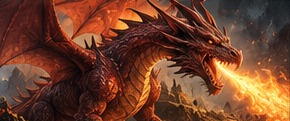
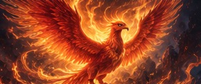
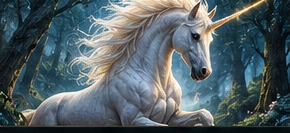
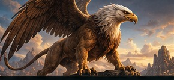
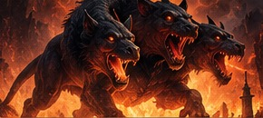
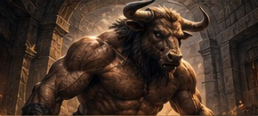
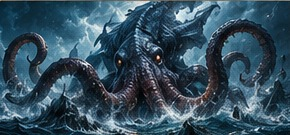
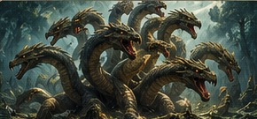

Dragon
A mighty, fire-breathing creature found in legends across the world. Dragons represent power, mystery, and ancient wisdom.
Mythical Beasts from Around the World

A mighty, fire-breathing creature found in legends across the world. Dragons represent power, mystery, and ancient wisdom.

A magnificent bird reborn from its own ashes. The phoenix symbolizes renewal, immortality, and the endless cycle of life.

A magical horse with a single horn, celebrated for its purity, grace, and healing powers in ancient folklore.

With the body of a lion and the head and wings of an eagle, the griffin is a legendary guardian of treasures.

The fearsome three-headed hound of Greek mythology guards the gates of the underworld and prevents the dead from escaping.

Half human and half bull, the Minotaur dwells in a labyrinth and embodies the terrifying power of ancient myths.

A colossal sea monster from northern folklore, said to drag entire ships beneath the waves with its enormous tentacles.

A monstrous serpent with many heads. In Greek legend, cutting off one head could cause two more to grow in its place.
Discover how dragons became symbols of strength, wisdom, and mystery across cultures.
Explore the timeless story of the legendary bird of fire, rebirth, and renewal.
Meet the creatures that haunted sailors' imaginations for centuries.